Robotics & AI Engineer at Vellore Institute of Technology (VIT Chennai '27).
Neuromorphic architectures, autonomous perception, and production systems.
I engineer biologically inspired neural architectures, autonomous robotics pipelines, and scalable web
platforms. Right now that's neuromorphic-snn — energy-efficient spiking neural networks
for edge-AI autonomy. Also deployed dbrsolarepc.com and real-time RPLIDAR SLAM on mobile rovers.
python c++ ros2 pytorch opencv snn react django postgres docker linux
neuromorphic-snn-brain · python, snn, neuromorphic
Energy-efficient neuromorphic framework combining Spiking Neural Networks and animalistic
autonomy loops with >60% reduced temporal processing overhead under strict hardware limits.
dbr-solar-epc · full stack, react, django, postgres
Production enterprise solar EPC web platform serving corporate & industrial energy clients.
Sub-1.2s First Contentful Paint with 95+ Lighthouse score across desktop and mobile.
rover-visual-odometry · opencv, python, deep learning
Real-time multi-frame ego-motion estimation and optical flow tracking pipeline computing
sub-30ms per-frame camera pose recovery with RANSAC outlier rejection.
rplidar-slam-mapping · ros2, gazebo, rviz, c++
Simultaneous Localization and Mapping on physical differential rovers with zero-drift
laser scan matching, costmap tuning, and occupancy grids.
crowd-fall-detection · opencv, pose estimation, spatial heatmaps
High-density crowd anomaly tracking and low-latency (<150ms) fall-detection architecture
with edge-local video inference preserving data privacy.


Every graphic here is generated, not embedded from anyone else's server.
ascii.svg is a photo pushed through a character ramp by
scripts/make_portrait.py; the stat graphics and
these section headings are drawn by a scheduled action
straight from the GitHub GraphQL API, once a day, committing only what changed.